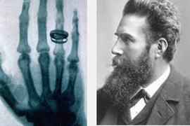

Телефон (1876)
Изобретён Александром Грэмом Беллом. Телефон стал революционным способом передачи голоса на дальние расстояния, что изменило коммуникацию по всему миру.

Лампочка (1879)
Томас Эдисон усовершенствовал электрическую лампочку, сделав её долговечной и доступной для массового использования, что привело к революции в освещении.

Автомобиль (1885)
Карл Бенц создал первый бензиновый автомобиль, который стал основой для развития автомобильной промышленности и трансформации транспорта по всему миру.

Рентген (1895)
Вильгельм Рентген открыл рентгеновские лучи, что привело к созданию рентгенографии — важного метода диагностики в медицине и научных исследованиях.